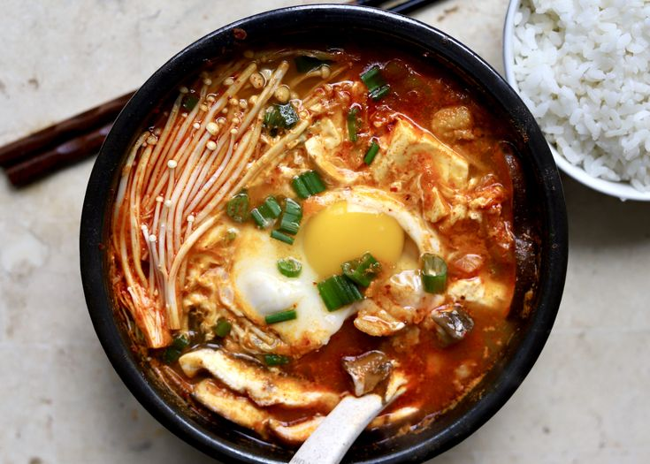

Home
Sundubu Jjigae (Korean Tofu Stew)
This is an easy and authentic version of Korean Tofu Stew. I used to eat this every day at a very popular restaurant. I befriended a woman who worked there and she gave me the recipe. It's very versatile. Small pieces of meat or seafood can be added. It's thick and great in the winter and can be made very mild or very spicy. I've seen some recipes on the internet for this dish that are the American version. They may be good too but this one is authentic.

Ingredients
- Anchovy Stock
- Soft Tofu (Silken Tofu or Soon Tofu)
- Pork belly
- Kimchi
- Enoki mushrooms
- Onion
- Garlic cloves
- Egg
- Green onion
- Kimchi juice
- Regular soy sauce
- Fish sauce
- Sesame oil
- White Granulated Sugar
- Gochugaru
Directions
- First heat a small pot or Korean earthenware clay pot on medium heat. Once hot, add sliced pork belly and fry for 2 minutes until cooked through and some of the fat renders out. Then sauté garlic, onions with the pork.
- Next add regular soy sauce, fish sauce, sesame oil, sugar, and gochugaru. Mix together and cook until onions become translucent, a couple minutes. Then add kimchi and cook until kimchi juices release, about 1-2 minutes.
- Next mix in stock and kimchi juice. Cover and bring to a boil on medium-high heat. Once it reaches a boil, reduce to medium heat and simmer for 20 minutes, uncovered. Stir occasionally.
- Add in soft tofu into the center of the pot. Break it up with a spoon into big chunks.
- Then add in enoki mushrooms in two bunches beside the tofu. Let this simmer for 1 minute.
- Crack a raw egg into the centre of the stew on top of the tofu and let the egg cook until your desired preference. Remove off heat. Use oven mitts if you're using a earthenware pot. Lastly garnish with green onions and enjoy with a side of rice!